旅のハイライト
- 成都から西昌へ朝列車、その先を昭覚へバス移動
- 色、服、刺繍、生活の場をゆっくり観察する旅
- 移動は前倒し、現地では余白を楽しむ
2026年3月19日(木) - 3月22日(日)。 拓磨さんと萌子さんのための、イ族文化を見る旅のしおり。 今回は「旅程表」より少し雑誌寄りにして、写真で気分を上げてから実務に落ちる構成にしています。
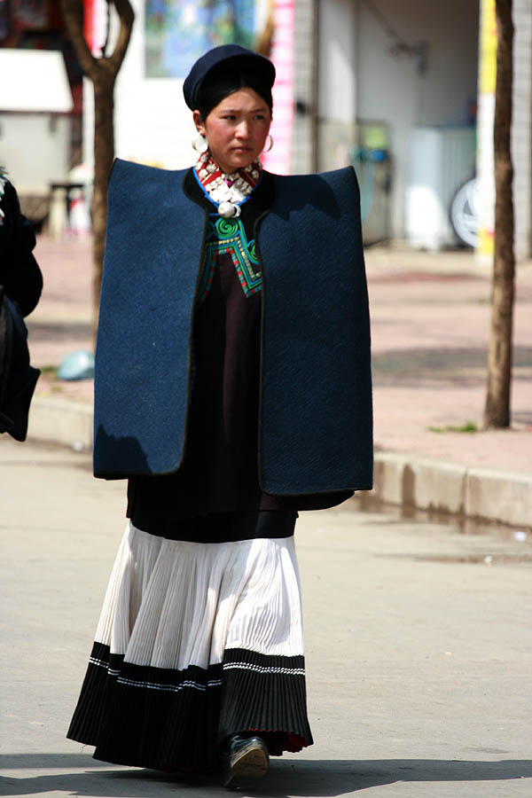
高地の空気、民族衣装の色、山の移動のリズム。 その全部がつながる旅として、しおり全体の雰囲気を整えています。
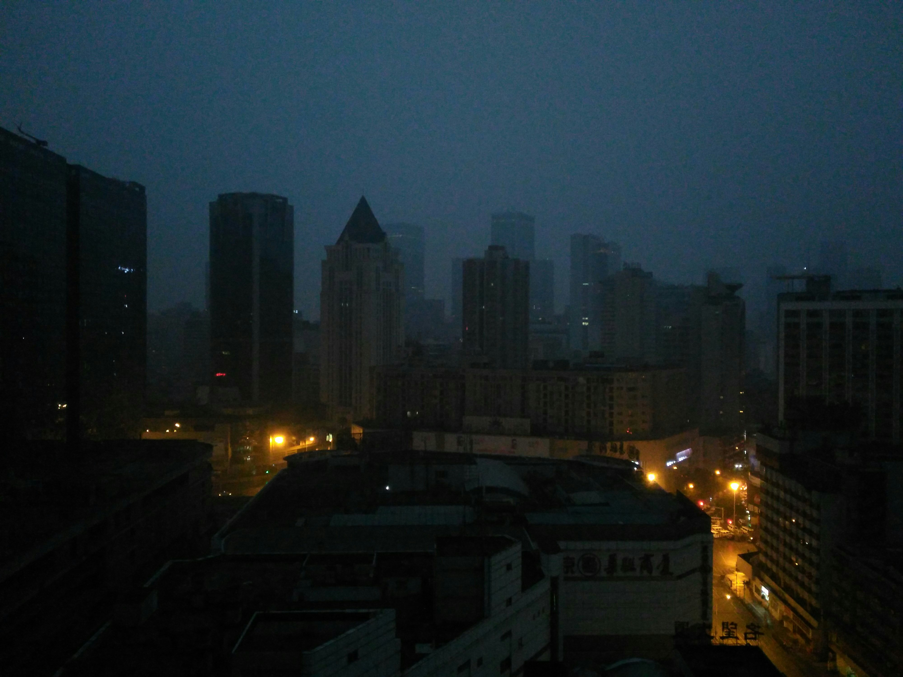
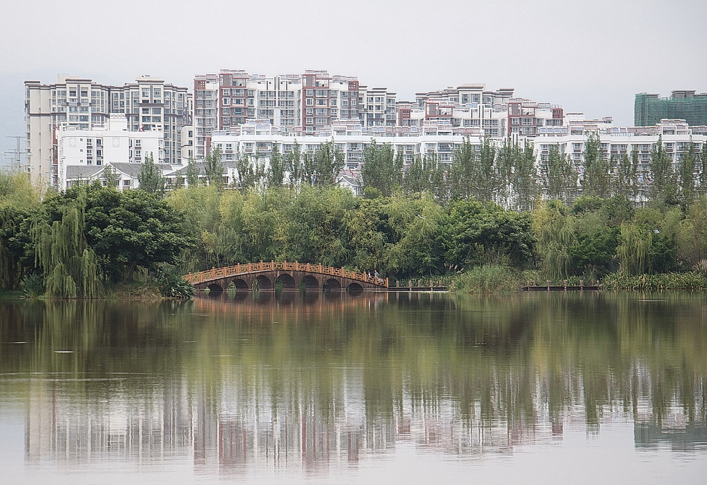
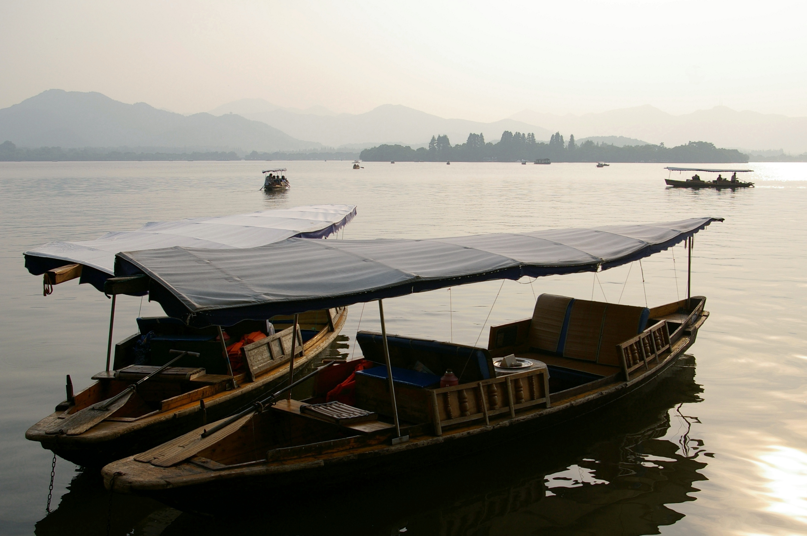
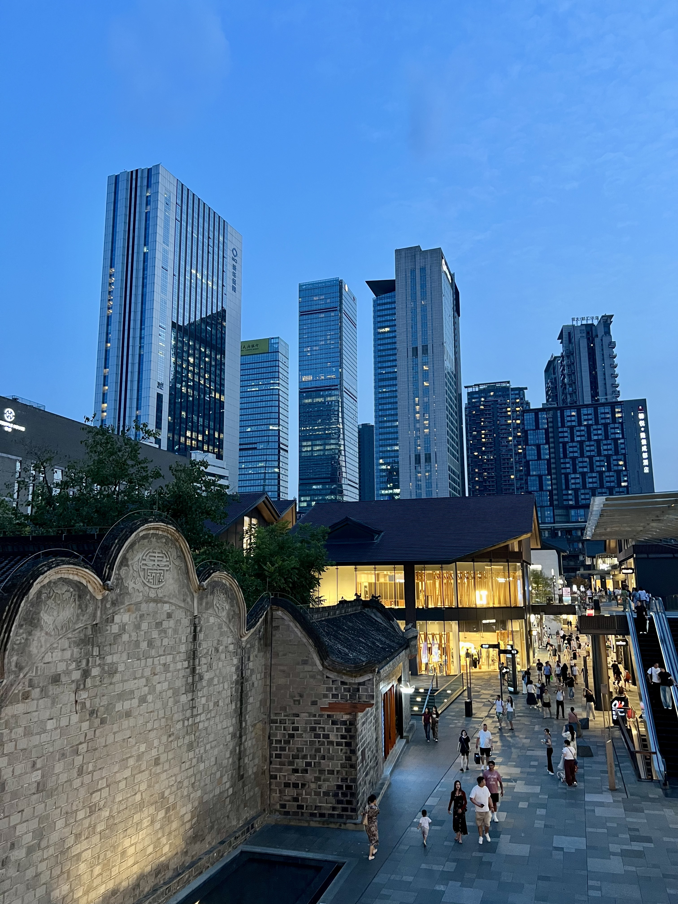
都市から山へ入っていく流れごと含めて、今回の旅の空気をつかむページです。
国際線、国内線、列車、バス。乗り物が変わるたびに旅の密度も変わっていきます。
大阪 → 北京 → 成都 → 西昌 → 昭覚 → 成都 → 杭州 → 大阪
服装の正解は、真冬装備ではなく `重ね着 + 朝晩だけ軽ダウン`。見た目より、脱ぎ着しやすさが効く旅です。
長距離の核は「飛行機 4本 + 列車 2本 + 昭覚往復バス」。一番大事なのは、昭覚往復だけ早めに動くことです。
ホテル着は 22:30 - 23:30 見込み。初日は休息優先。
成都東駅の乗換は 45分。寄り道しない前提で成立しやすいです。
どんな宿に泊まるかが見えるだけで、不安はかなり減ります。ここは情報だけでなく「宿の雰囲気」も感じられるように、写真を大きめに使っています。
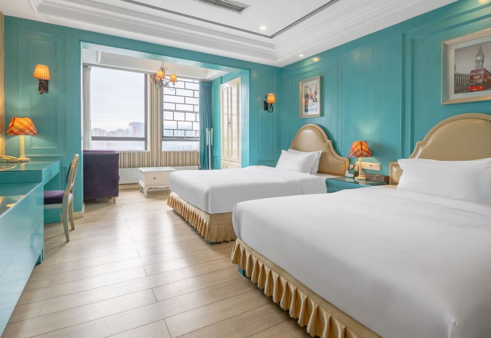
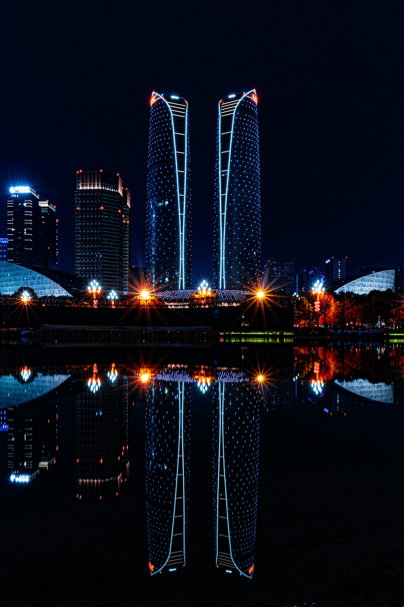
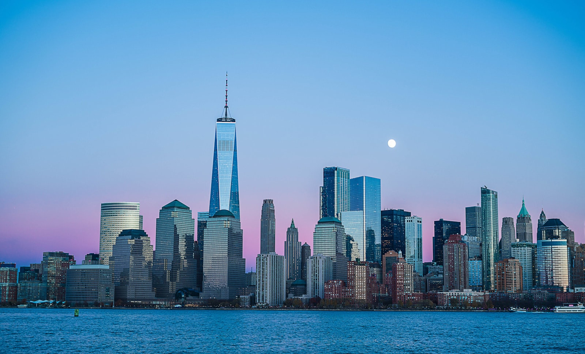
世紀城エリアで、初日の遅め到着を無理なく受け止める役。都会的で比較的すっきりしたビジネスホテル寄りの印象です。
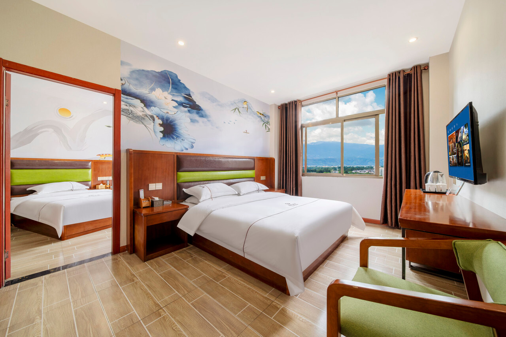
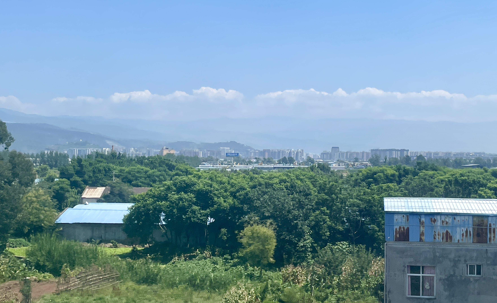
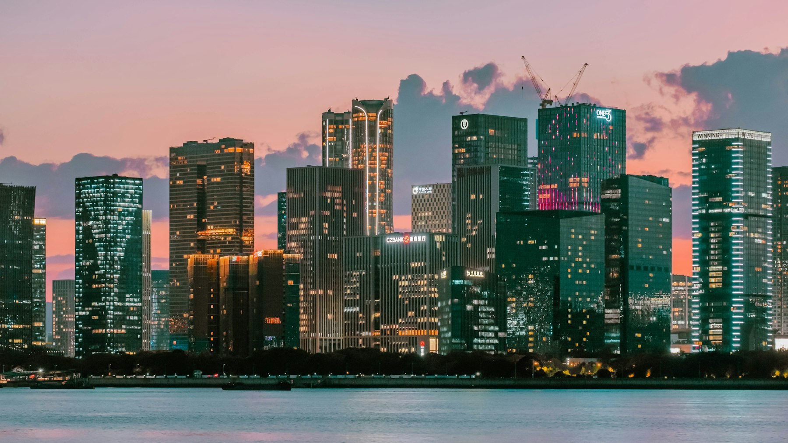
旅の核になる一泊。豪華さより「移動後にちゃんと休めること」が大事な宿で、山側の町で使うには十分実用的な印象です。
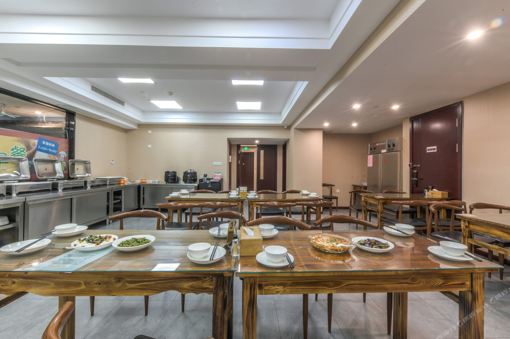

空港そばで最終夜の回復担当。深夜着と早朝発に寄せた「とにかく機能的」な宿で、今回の旅の締めにかなり相性が良いです。
最新のチェックリストから、しおりとして使いやすい形に抽出しています。実務的には、決済・オフライン控え・中国語スクショがかなり重要です。
気温と持ち物判断は `packing_checklists_2026-03.md` をもとに要約。地域写真は Unsplash / Wikimedia Commons、ホテル写真は Trip.com 掲載画像を使用。